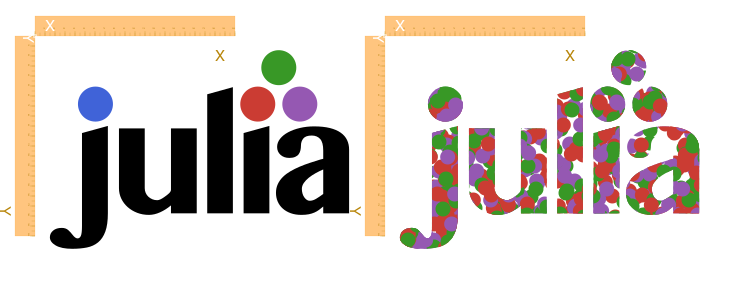
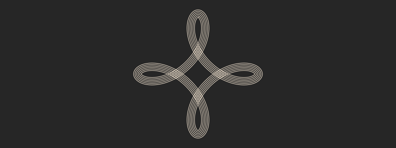
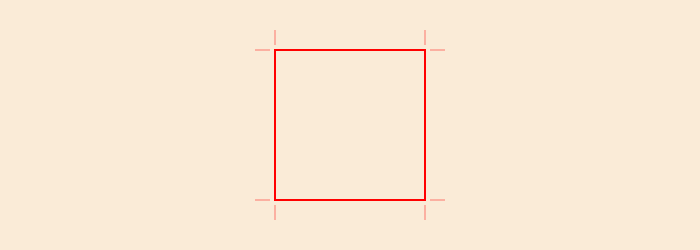
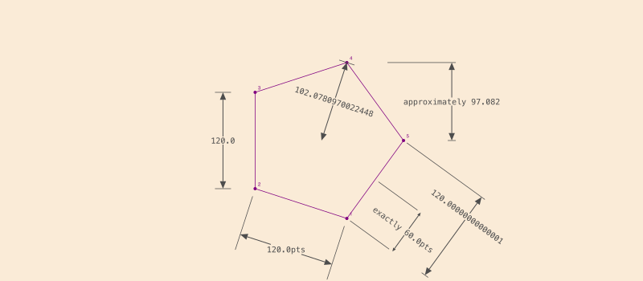
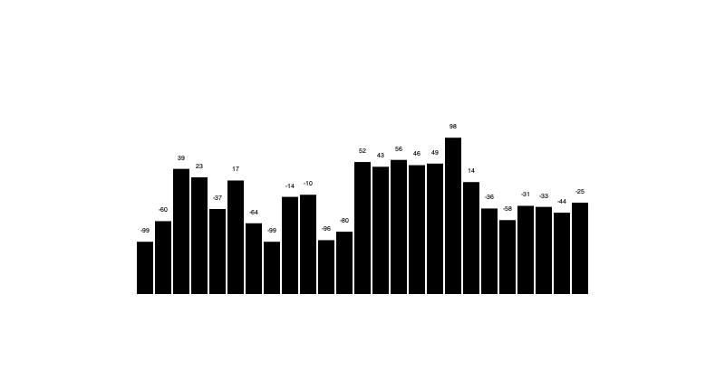
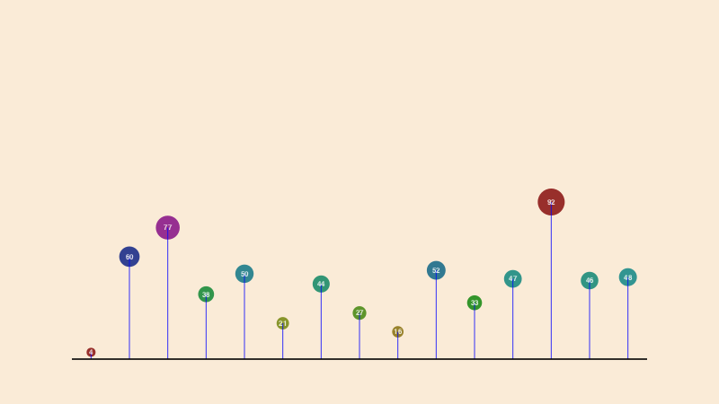
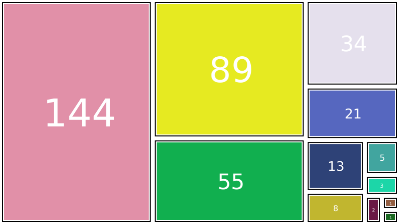

More graphics
Julia logos
A couple of functions in Luxor provide you with instant access to the Julia logo, and the three colored circles:
cells = Table([300], [350, 350])
@layer begin
translate(cells[1])
translate(-165, -114)
rulers()
julialogo()
end
@layer begin
translate(cells[2])
translate(-165, -114)
rulers()
julialogo(action=:clip)
for i in 1:500
@layer begin
translate(rand(0:400), rand(0:250))
juliacircles(10)
end
end
clipreset()
end
Luxor.julialogo — Functionjulialogo(;
action=:fill,
color=true,
bodycolor=colorant"black",
centered=false)Draw the Julia logo. The default action is to fill the logo and use the colors:
julialogo()If color is false, the bodycolor color is used for the logo.
The function uses the current drawing state (position, scale, etc).
The centered keyword lets you center the logo at its mathematical center, but the optical center might lie somewhere else - it's difficult to position well due to its asymmetric design.
To use the logo as a clipping mask:
julialogo(action=:clip)(In this case the color setting is automatically ignored.)
To obtain a stroked (outlined) version:
julialogo(action=:path)
sethue("red")
strokepath()Luxor.juliacircles — Functionjuliacircles(radius=100)Draw the three Julia circles ("dots") in color centered at the origin.
The distance of the centers of each circle from the origin is radius.
The optional keyword argument outercircleratio (default 0.75) determines the radius of each circle relative to the main radius. So the default is to draw circles of radius 75 points around a larger circle of radius 100.
Return the three centerpoints.
The innercircleratio (default 0.65) no longer does anything useful (it used to draw the smaller circles) and will be deprecated.
Hypotrochoids
hypotrochoid() makes hypotrochoids. The result is a polygon. You can either draw it directly, or pass it on for further polygon fun, as here, which uses offsetpoly() to trace round it a few times.
origin()
background("grey15")
sethue("antiquewhite")
setline(1)
p = hypotrochoid(100, 25, 55, :stroke, stepby=0.01, vertices=true)
for i in 0:3:15
poly(offsetpoly(p, i), :stroke, close=true)
end
There's a matching epitrochoid() function.
Luxor.hypotrochoid — Functionhypotrochoid(R, r, d, action=:none;
stepby=0.01,
period=0.0,
vertices=false)Make a hypotrochoid with short line segments. (Like a Spirograph.) The curve is traced by a point attached to a circle of radius r rolling around the inside of a fixed circle of radius R, where the point is a distance d from the center of the interior circle. Things get interesting if you supply non-integral values.
Special cases include the hypocycloid, if d = r, and an ellipse, if R = 2r.
stepby, the angular step value, controls the amount of detail, ie the smoothness of the polygon,
If period is not supplied, or 0, the lowest period is calculated for you.
The function can return a polygon (a list of points), or draw the points directly using the supplied action. If the points are drawn, the function returns a tuple showing how many points were drawn and what the period was (as a multiple of pi).
Luxor.epitrochoid — Functionepitrochoid(R, r, d, action=:none;
stepby=0.01,
period=0,
vertices=false)Make a epitrochoid with short line segments. (Like a Spirograph.) The curve is traced by a point attached to a circle of radius r rolling around the outside of a fixed circle of radius R, where the point is a distance d from the center of the circle. Things get interesting if you supply non-integral values.
stepby, the angular step value, controls the amount of detail, ie the smoothness of the polygon.
If period is not supplied, or 0, the lowest period is calculated for you.
The function can return a polygon (a list of points), or draw the points directly using the supplied action. If the points are drawn, the function returns a tuple showing how many points were drawn and what the period was (as a multiple of pi).
Cropmarks
If you want cropmarks (aka trim marks), use the cropmarks() function, supplying the centerpoint, followed by the width and height:
cropmarks(O, 1200, 1600)
cropmarks(O, paper_sizes["A0"]...)sethue("red")
box(O, 150, 150, :stroke)
cropmarks(O, 150, 150)
Luxor.cropmarks — Functioncropmarks(center, width, height)Draw cropmarks (also known as trim marks).
Dimensioning
Simple dimensioning graphics can be generated with dimension(). To convert from the default unit (PostScript points), or to modify the dimensioning text, supply a function to the format keyword argument.

setline(0.75)
sethue("purple")
pentagon = ngonside(O, 120, 5, vertices=true)
poly(pentagon, :stroke, close=true)
circle.(pentagon, 2, :fill)
fontsize(6)
label.(split("12345", ""), :NE, pentagon)
fontface("Menlo")
fontsize(10)
sethue("grey30")
dimension(O, pentagon[4],
fromextension = [0, 0])
dimension(pentagon[1], pentagon[2],
offset = -60,
fromextension = [20, 50],
toextension = [20, 50],
textrotation = 2π/5,
textgap = 20,
format = (d) -> string(round(d, digits=4), "pts"))
dimension(pentagon[2], pentagon[3],
offset = -40,
format = string)
dimension(pentagon[5], Point(pentagon[5].x, pentagon[4].y),
offset = 60,
format = (d) -> string("approximately ",round(d, digits=4)),
fromextension = [5, 5],
toextension = [80, 5])
dimension(pentagon[1], midpoint(pentagon[1], pentagon[5]),
offset = 70,
fromextension = [65, -5],
toextension = [65, -5],
texthorizontaloffset = -5,
arrowheadlength = 5,
format = (d) ->
begin
if isapprox(d, 60.0)
string("exactly ", round(d, digits=4), "pts")
else
string("≈ ", round(d, digits=4), "pts")
end
end)
dimension(pentagon[1], pentagon[5],
offset = 120,
fromextension = [5, 5],
toextension = [115, 5],
textverticaloffset = 0.5,
texthorizontaloffset = 0,
textgap = 5)Luxor.dimension — Functiondimension(p1::Point, p2::Point;
format::Function = (d) -> string(d), # process the measured value into a string
offset = 0.0, # left/right, parallel with x axis
fromextension = (10.0, 10.0), # length of extensions lines left and right
toextension = (10.0, 10.0), #
textverticaloffset = 0.0, # range 1.0 (top) to -1.0 (bottom)
texthorizontaloffset = 0.0, # range 1.0 (top) to -1.0 (bottom)
textgap = 5, # gap between start of each arrow (≈ fontsize?)
textrotation = 0.0,
arrowlinewidth = 1.0,
arrowheadlength = 10,
arrowheadangle = π/8)Calculate and draw dimensioning graphics for the distance between p1 and p2. The value can be formatted with function format.
p1 is the lower on the page (ie probably the higher y value) point, p2 is the higher on the page (ie probably lower y) point.
offset is to the left (-x) when negative.
Dimension graphics will be rotated to align with a line between p1 and p2.
In textverticaloffset, "vertical" and "horizontal" are best understood by "looking" along the line from the first point to the second. textverticaloffset ranges from -1 to 1, texthorizontaloffset in default units.
toextension
[5 , 5]
<---> <--->
to
----------- +
^
|
-50
|
v
---------- +
from
<---> <--->
[5 , 5]
fromextension
<---------------->
offsetReturns the measured distance and the text.
Barcharts
For simple barcharts, use the barchart() function, supplying an array of numbers:
fontsize(7)
sethue("black")
v = rand(-100:100, 25)
barchart(v, labels=true)
To change the way the bars and labels are drawn, define some functions and pass them as keyword arguments:
function mybarfunction(values, i, low, high, barwidth, scaledvalue)
@layer begin
extremes = extrema(values)
sethue(Colors.HSB(rescale(values[i], extremes[1], extremes[2], 0, 360), 1.0, 0.5))
csize = rescale(values[i], extremes[1], extremes[2], 5, 15)
circle(high, csize, :fill)
setline(1)
sethue("blue")
line(low, high, :stroke)
sethue("white")
text(string(values[i]), high, halign=:center, valign=:middle)
end
end
function mylabelfunction(values, i, low, high, barwidth, scaledvalue)
@layer begin
translate(low)
text(string(values[i]), O + (0, 10), halign=:center, valign=:middle)
end
end
v = rand(1:100, 15)
bbox = BoundingBox() * 0.8
box(bbox, :clip)
p = barchart(v, boundingbox=bbox, barfunction=mybarfunction, labelfunction=mylabelfunction)
rule(p[1])
Luxor.barchart — Functionbarchart(values;
boundingbox = BoundingBox(O + (-250, -120), O + (250, 120)),
bargap=10,
margin = 5,
border=false,
labels=false,
labelfunction = (values, i, lowpos, highpos, barwidth, scaledvalue) -> begin
label(string(values[i]), :n, highpos, offset=10)
end,
barfunction = (values, i, lowpos, highpos, barwidth, scaledvalue) -> begin
@layer begin
setline(barwidth)
line(lowpos, highpos, :stroke)
end
end)Draw a barchart where each bar is the height of a value in the values array. The bars will be scaled to fit in a bounding box.
Text labels are drawn if the keyword labels=true.
Extended help
The function returns a vector of points; each is the bottom center of a bar.
Draw a Fibonacci sequence as a barchart:
fib(n) = n > 2 ? fib(n - 1) + fib(n - 2) : 1
fibs = fib.(1:15)
@draw begin
fontsize(12)
barchart(fibs, labels=true)
endTo control the drawing of the text and bars, define functions that process the end points:
mybarfunction(values, i, lowpos, highpos, barwidth, scaledvalue)
mylabelfunction(values, i, lowpos, highpos, barwidth, scaledvalue)
and pass them like this:
barchart(vals, barfunction=mybarfunction)
barchart(vals, labelfunction=mylabelfunction)function myprologfunction(values, basepoint, minbarrange, maxbarrange, barchartheight)
@layer begin
setline(0.2)
for i in 0:10:maximum(values)
rule(boxbottomcenter(basepoint) + (0, -(rescale(i, minbarrange, maxbarrange) * barchartheight)))
end
end
endBox maps
The boxmap() function divides a rectangular area into a sorted arrangement of smaller boxes or tiles based on the values of elements in an array.
This example uses the Fibonacci sequence to determine the area of the boxes. Notice that the values are sorted in reverse, and are scaled to fit in the available area.
fib = [1, 1, 2, 3, 5, 8, 13, 21, 34, 55, 89, 144]
# make a boxmap and store the tiles
tiles = boxmap(fib, BoundingBox()[1], 800, 450)
for (n, t) in enumerate(tiles)
randomhue()
bb = BoundingBox(t)
sethue("black")
box(bb - 5, :stroke)
randomhue()
box(bb - 8, :fill)
# text labels
sethue("white")
# rescale text to fit better
fontsize(boxwidth(bb) > boxheight(bb) ? boxheight(bb)/4 : boxwidth(bb)/4)
text(string(sort(fib, rev=true)[n]),
midpoint(bb[1], bb[2]),
halign=:center,
valign=:middle)
end
Luxor.boxmap — Functionboxmap(A::Array, pt, w, h)Build a box map of the values in A with one corner at pt and width w and height h. There are length(A) boxes. The areas of the boxes are proportional to the original values, scaled as necessary.
The return value is an array of BoxmapTiles. For example:
[BoxmapTile(0.0, 0.0, 10.0, 20.0)
BoxmapTile(10.0, 0.0, 10.0, 13.3333)
BoxmapTile(10.0, 13.3333, 10.0, 6.66667)]with each tile containing (x, y, w, h). box() and BoundingBox() can work with BoxmapTiles as well.
Example
using Luxor
@svg begin
fontsize(16)
fontface("HelveticaBold")
pt = Point(-200, -200)
a = rand(10:200, 15)
tiles = boxmap(a, Point(-200, -200), 400, 400)
for (n, t) in enumerate(tiles)
randomhue()
bb = BoundingBox(t)
box(bb - 2, :stroke)
box(bb - 5, :fill)
sethue("white")
text(string(n), midpoint(bb[1], bb[2]), halign=:center)
end
end 400 400 "/tmp/boxmap.svg"